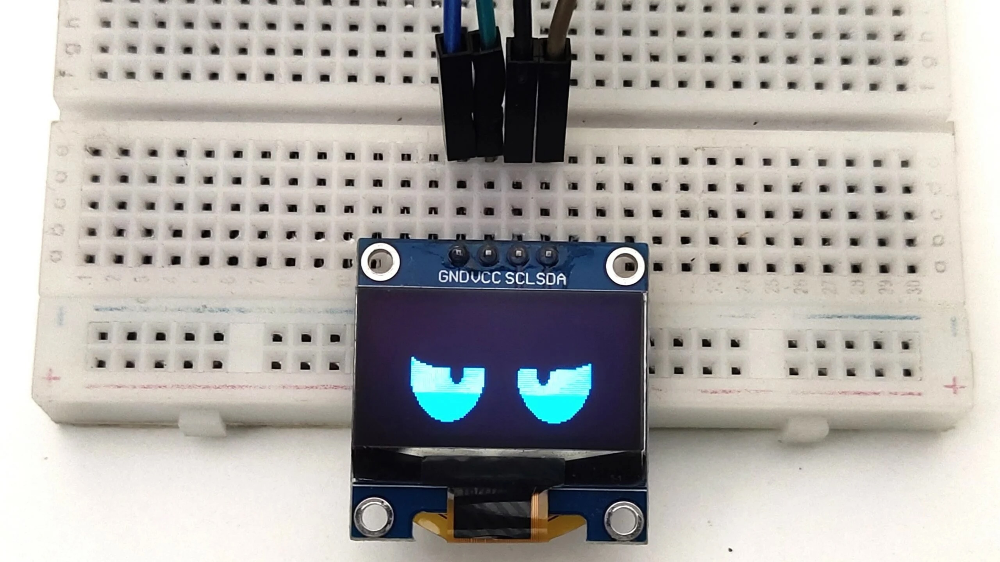
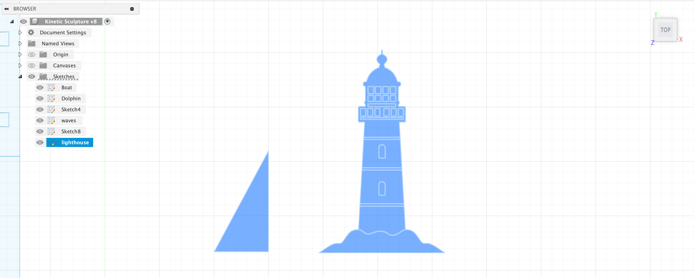
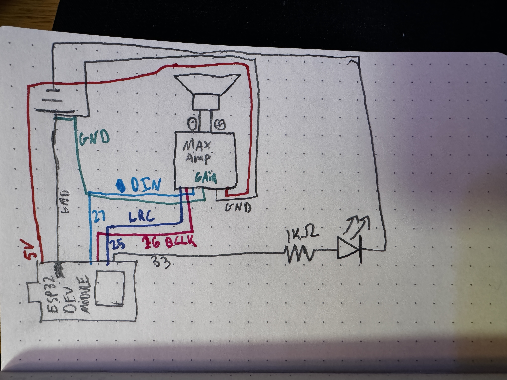
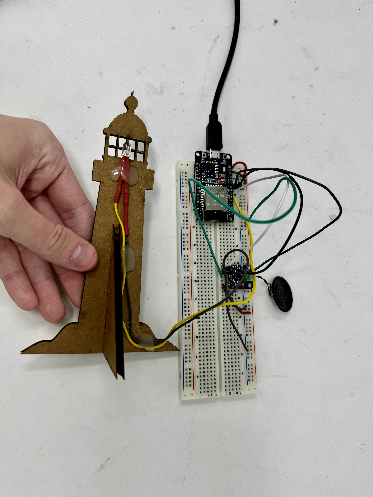
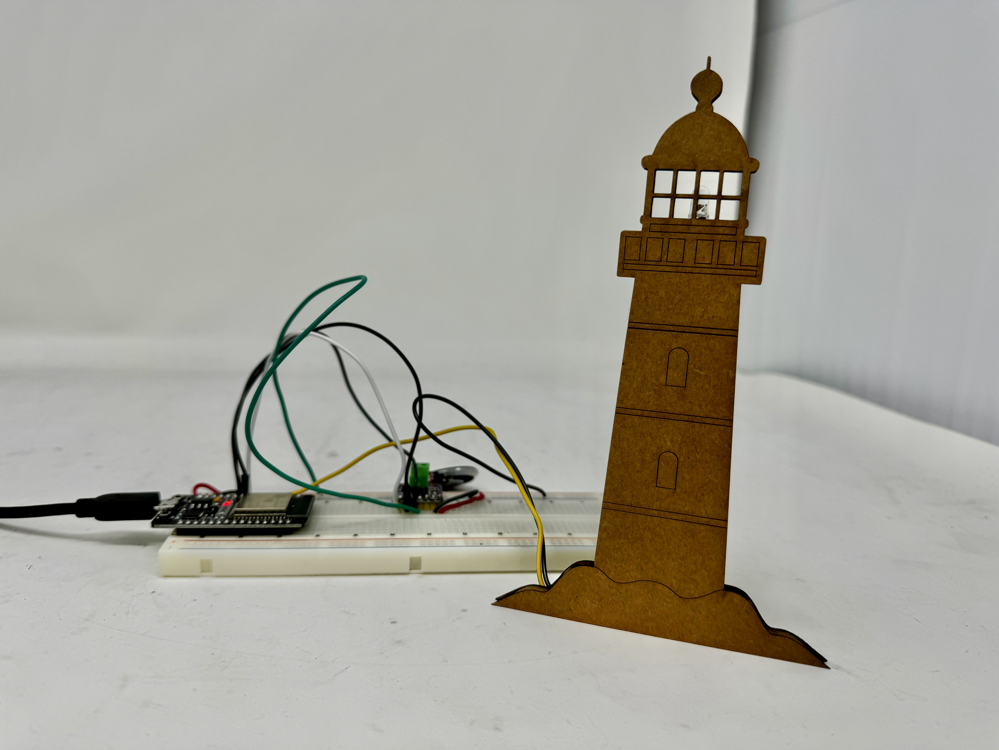

Week 4: Microcontroller Programming

Arduino-Powered Seascape!
This week, our assignment was the extremely specific and helpful instruction of "make an ardiuno do something." Armed with this wisened guidance, I set out to figure out what I should make an arduino do. I thought that the most fun way to integrate this project into my greater PS70 portfolio would be to figure out how I could get this arduino project to interact with my kinetic scultpure. My initial thoughts were obviously, what would be an interesting way to control the motor? But as I thought about my specific project, I realized that the natural, continuous motion induced by the motor is what I was looking for as it mimicked the rocking of the ocean. I then began thinking about what other interesting things I've seen around beaches and that is vaguely ocean-related, and I though about how 95% of beaches that I've been to in New England have a lighthouse in some form of disarray just near enough to taunt you that you could get up there but just far away enough that it would be too difficult to reach out. They really seem to devise those things to deter the average impulsive college student. Anyways, I love lighthouses and one day want to climb one since it has been so cruelly held out before me like cheese in front of a mouse on a treadmill. Because of this, I realized that I could make my own lighthouse! This would also give the arduino something to do as I know that I could make an LED blink to simulate the spinning of the mirror in the lighthouse. With this in mind, I went about designing a lighthouse that I could laser cut out of cardboard. I also knew that this would be two dimensional and would need to stand up, so I designed a rudimentary stand to go with it.
void loop() {
// LED blinking (non-lobotomizing)
unsigned long currentMillis = millis();
if (currentMillis - previousLEDMillis >= ledInterval) {
previousLEDMillis = currentMillis;
ledState = !ledState;
digitalWrite(LED_PIN, ledState);
}
}void loop() {
Serial.println("playing the sound");
for (float i = 0; i < 572326; i++) {
// Handle LED blinking (non-lobotomizing)
unsigned long currentMillis = millis();
if (currentMillis - previousLEDMillis >= ledInterval) {
previousLEDMillis = currentMillis;
ledState = !ledState;
digitalWrite(LED_PIN, ledState);
}
//convert 8 bit to 16 bit
uint16_t sample = map(Test[(int)(i)], 0, 255, 0, 32767);
//you can only write an 8bit integer at a time so we read the 16 bit integer, 8 bits at a time
I2S.write((uint8_t *)&sample, 2);
// I2S.write((uint8_t *)&sample, 2);
}
}

